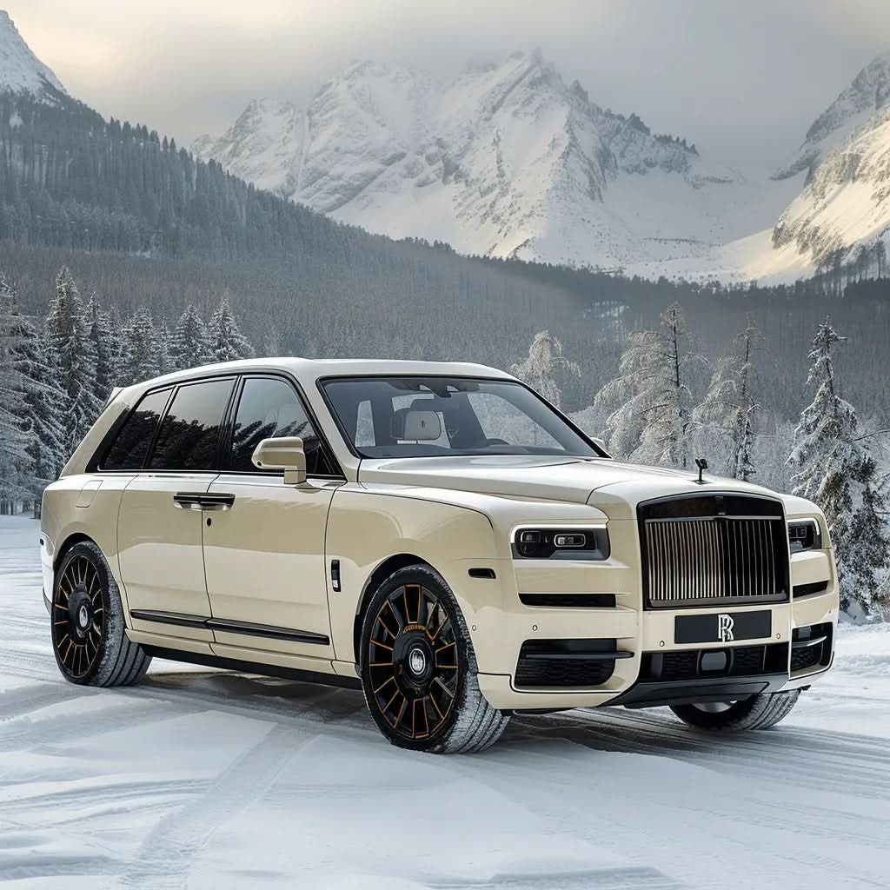

TRIOLE GOÛT DE LA ROUTE
Une présence majestueuse, un raffinement absolu. Le Rolls-Royce Cullinan incarne le luxe sans compromis, pour faire de chaque voyage une expérience d'exception.
| 571 ch | V12 | 850 Nm | 5,2 s |
| PUISSANCE | 6,75 L BITURBO | Couple | 0 à 100 KM/H |

Portes antagonistes, ciel étoilé, cuirs choisis à la main : à bord du Cullinan, chaque détail invite à ralentir. Son V12 délivre sa force sans un bruit, sa suspension pneumatique efface la route, qu’elle soit enneigée ou pavée. Un salon roulant, capable d’aller partout.
| V12 d’exception | Tapis volant | Sur mesure |
| Un douze-cylindres biturbo d’une douceur absolue et d’une réserve de puissance infinie. | La suspension pneumatique anticipe la route pour effacer chaque imperfection. | Teintes, cuirs, boiseries : chaque Cullinan est façonné selon son propriétaire. |
Données constructeur indicatives, selon version et équipements.